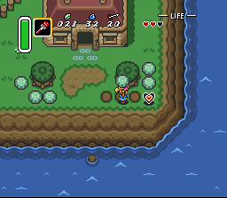
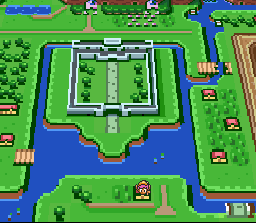
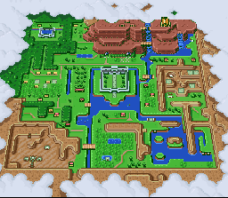
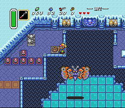
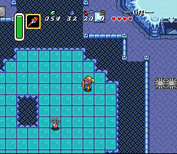

Zelda 3 Challenge - Screen Shots - Batch 2
Here's a few pictures of what I've been able to do while beta testing Hyrule Magic. They're only "practice" and will not be included in the finalized game."I knew it rained hard last night, but wow..."

"How long has this been here..?"

How many changes to this map can you find?

The big picture, including more small changes.

Can you still recognize this room?

Imagine fighting the fuzzy creature on this slippery floor...
Questions? Ideas? Suggestions?
Write to me!
Return to Zelda3C's main page
This site is not affiliated with nor endorsed by Nintendo in any way.